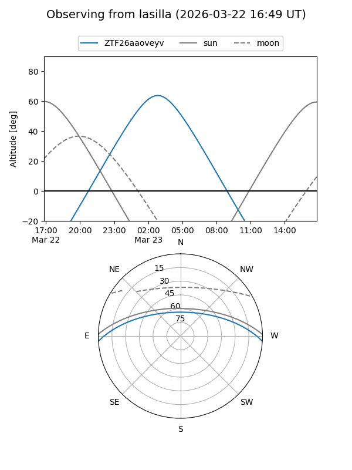
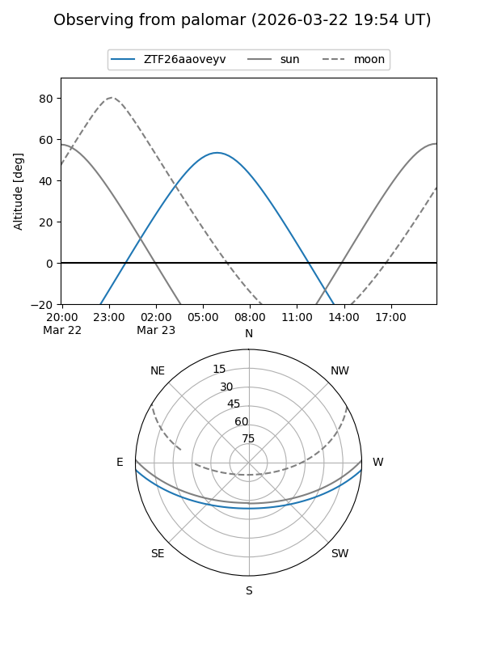

ZTF26aaoveyv
Target ZTF26aaoveyv at 2026-03-23 08:38
Aliases and brokers:
FINK: link
Lasair: link
ALeRCE: link
alt names
ZTF26aaoveyv (ztf,fink_ztf)
Coordinates:
equatorial (ra, dec) = 152.0395,-2.98622
equatorial (HMS+DMS) = 10:08:09.48,-02:59:10.38
galactic (l, b) = (243.8499,+40.45453)
Flags:
Photometry:
last ztfg=17.70
1 ztfg detections
Lightcurve
Visibility


Additional plots